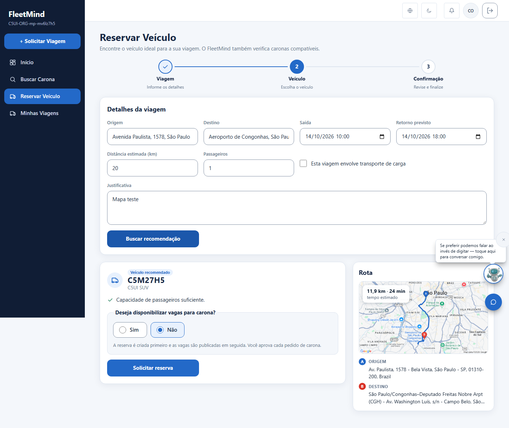
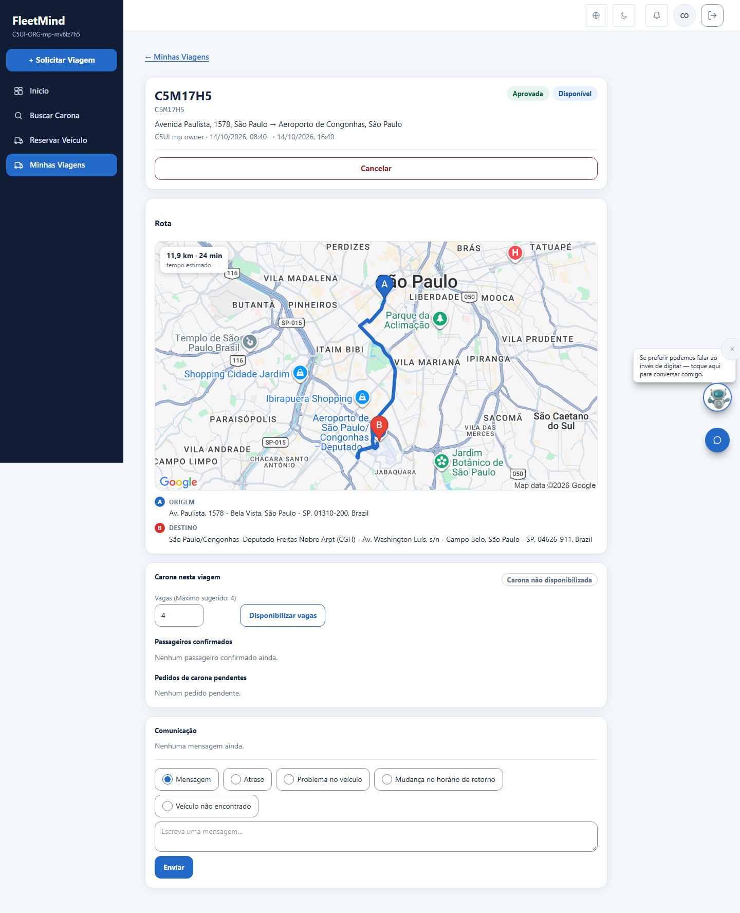
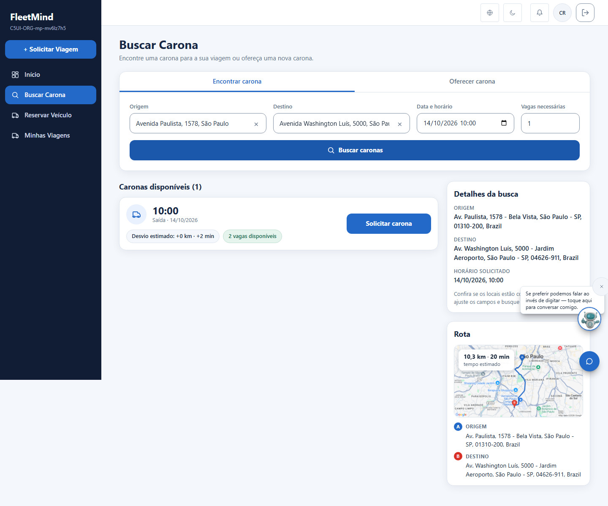

Esquerda: arte aprovada (art06-web.png). Direita: tela real (Google Static Maps via server action, imagem em data URL; chave nunca vai ao navegador). Diferencas honestas: o mapa fica em um cartao "Rota" ao lado do resultado (nao dentro do cartao do formulario); o chip mostra km e tempo estimado sem "transito normal" (nao pedimos dados de transito); sem botoes "Opcoes de rota" / localizacao e sem placas de rodovia sobrepostas (a imagem e estatica); pinos A/B do Google em vez de pinos desenhados.



